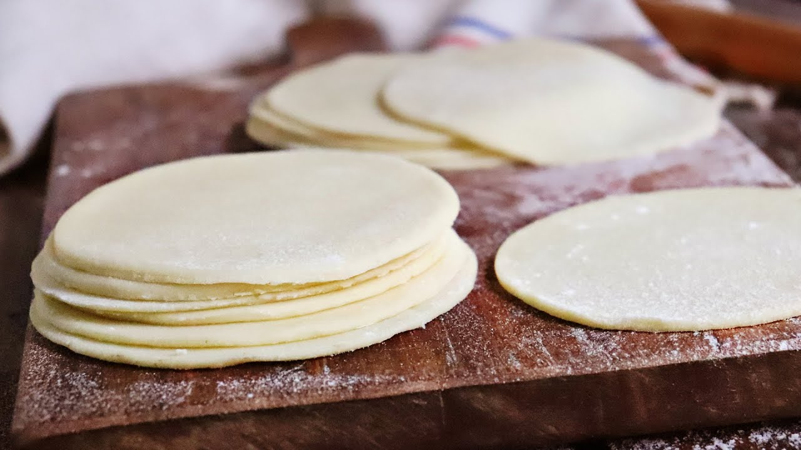

Tapas de Empanadas

En esta seccion vamos a cocinar un ingrediente clave. Tapas de empanada!. No podemos desarrollar tanto en algo tan basico y que todos conocemos. Vamos a alcarar que no siempre tiene que ser de harina blanca, huevo y tal. Siempre se pueden acudir a recetas libre de gluten y/o sin componentes animales.
Ingredientes
- Taza de Harina(420 gs/3 tazas)
- 1 Huevo
- 90 gs de Mantequilla sin sal
- 5 cucharadas soperas de agua
- Media cucharada de sal
Preparacion
- Poner la harina en un bowl, cernimos y agregamos sal.
- Cortamos la mantequilla en trozos y la agregamos a la harina.
- Agregamos un huevo a la mezcla.
- Mezclamos con las manos bien lavadas.
- Una cucharada de agua fria, envovlemos en plastico dandole forma de disco.
- Colocamos en el fefrigerador por 30 mins.